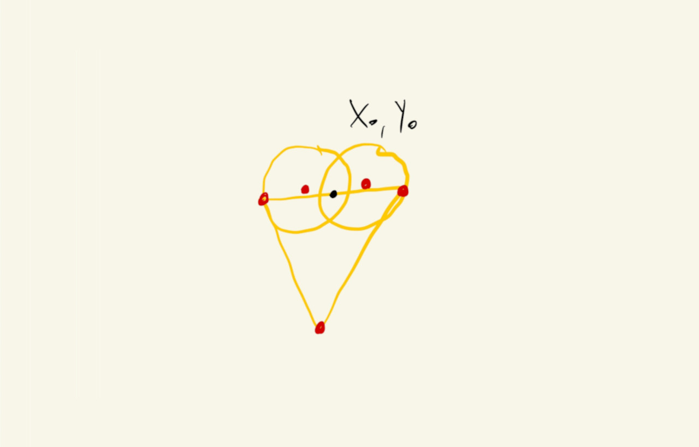
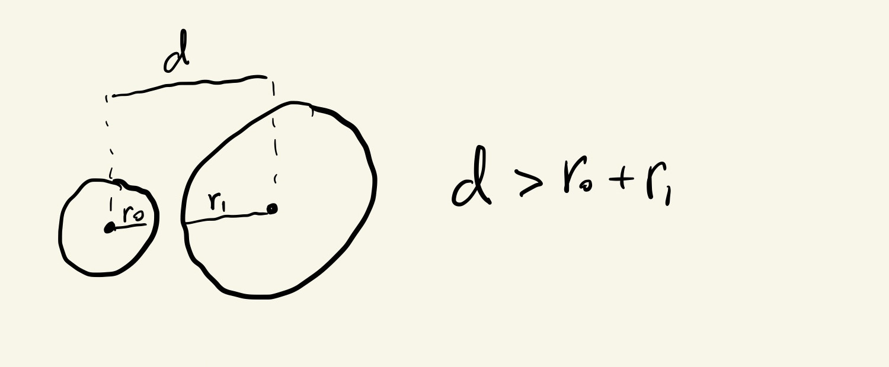

Designing Generative Experiences
2511 Term
Functions
Organize and Repeat
We saw how to use for() loops to run the same code over and over and create patterns.
There’s another method we can use to repeat actions in our code: functions.
Functions are predefined, named, sequences of commands that can be easily re-executed. In addition to this encapsulation that facilitates repeating sequences of commands, functions are also parameterizable, which allows them to have similar but different behavior, depending on information that gets sent to them during their execution. More about this in a bit.
This is how we define a function in JavaScript:
function functionName(param0, param1, ...) {
command0;
command1;
...
}
We’ve already seen many predefined p5.js functions, like rect(), ellipse(), line(), etc. They all take parameters that affect how and where the shapes get drawn, like the x and y positions, shape width and height. But now we will see how to define our own functions.
Let’s see one case where defining a function can simplify the code we write and decrease the number of variable we have to keep around.
We’ve seen how to draw simple shapes like squares, rectangles and ellipses, but what if we wanted to draw a heart?
We can start by trying to piece together some simple shapes like triangles and ellipses or arcs:
Doesn’t look so bad if we turn off the shape strokes:
And what if now we want to draw many hearts, of potentially different sizes, in different locations?
We could try to come up with the specific pixel locations for all of our hearts like this:
But this is tedious and prone to mistakes.
It would be a better idea to come up with a generic way of describing the heart shapes and then just repeat those steps in different locations of our canvas.
One possible way to do this is to pick a point sort of in the center of our heart shape, and then define all the other points in terms of the location of this point. For example, in the drawing below, the black point is our reference point (\(x_0\), \(y_0\)), and we’ll describe all of the red points relative to it:

For our heart, let’s set \(x_0 = 200\) and \(y_0 = 150\) and express all of the x and y parameters of our shapes in terms of these two variables:
Now, we could copy-paste the lines that draws the shapes and just change the values of \(x_0\) and \(y_0\) before calling them:
This is already easier to read and modify, but let’s say that now we want to parameterize the size of our heart shape. We would have to very carefully find all places in our sketch where we are drawing hearts in order to update the correct lines of code with the changes.
Functions can help here. We’ll use a function to encapsulate all the commands and values that are used when drawing a heart and that way when we need to update how we draw the heart later, we’ll only have to change our code in one place.
Let’s wrap our current heart-drawing commands inside a heart() function that takes two parameters, x and y locations, and draws a heart:
function heart(x0, y0) {
ellipse(x0 - 40, y0 - 15, 100, 100);
ellipse(x0 + 40, y0 - 15, 100, 100);
triangle(x0 - 88, y0, x0 + 88, y0, x0, y0 + 135);
}
We just copied the code from before, but now that these lines are inside a function, the x0 and y0 parameters reference specific x and y locations that get passes to the function each time it is called. Drawing the heart in different locations is as easy as this now:
And now we can invest in adding a size parameter to our heart shape:
The math is not very intuitive, but it only had to be figured out once, and now we can call our heart() function repeatedly at different locations and with different sizes:
Or use for() loops to create patterns on our canvas:
That vary in size based on the distance from the center of the canvas:
Compute and Return
We just saw how to define a function to capture a procedure (a list of commands), that can later be recalled.
Functions can also be defined to act a little bit more like the mathematical functions that we might have learned about in algebra class: a set of operations that maps a list of inputs to output values.
Let’s see what that means by revisiting a collision detection situation:
If we want to detect when the mouse circle is overlapping with the larger circle, we can first calculate the distance between the center of the two circles and see if that value is smaller than the sum of their radii:


We can calculate the Euclidean distance between the two circles using this formula, where \(x_0\) and \(y_0\) are the locations of the big circle and \(x_m\) and \(y_m\) are the locations of the mouse circle:
\[\displaystyle distance = \sqrt{(x_m - x_0)^2 + (y_m - y_0)^2}\]It’s kind of a mouthful, but it’s not that hard to implement in JavaScript. There’s a built in sqrt() function, and we can raise numbers to a power using a double-asterisk **, so \(3^{12}\), for example, becomes 3 ** 12:
let d = sqrt((mouseX - x0) ** 2 + (mouseY - y0) ** 2);
Finally, we can check for overlap by comparing this distance with the sum of the circles’ radii, which is half of their diameters:
if(d < oDiam / 2 + mDiam / 2){
// overlap !
}
It works, but … what if we have more than just one obstacle circle?
We could put a bunch of sqrt((mouseX - xi)**2 + (mouseY - yi)**2) expressions all over our code, but this quickly becomes hard to read and adjust:
As it is, it wouldn’t be very simple to update this code to also change the color of the obstacle circles upon collision.
Let’s use functions to simplify it.
The first function we’ll declare is a function that receives two pairs of (\(x\), \(y\)) coordinates, and calculates the Euclidean distance between them:
function euclidean(x0, y0, x1, y1) {
let d = sqrt((x1 - x0) ** 2 + (y1 - y0) ** 2);
return d;
}
This does the exact same calculation as we were doing above, except now the values for the second circle come from the function parameters x1 and y1, and not the hardcoded values mouseX and mouseY. This way we can reuse this function for computing any distance between any pair of points in our canvas.
The other thing to note is the last line of the function: return d;. This tells the function that the value in the d variable is to be used somewhere else, so after doing the calculation, it should make this value available to whatever part of the code invoked (or, called) the function. So, if we call the function like this: let mDist = euclidean(3, 6, 6, 2), the variable mDist would have the value 5;
Putting this in our code:
This is already better, but we still have some repeated code.
Maybe we can simplify this even further by creating a function that receives six values, for the locations and diameters of two circles, and returns a boolean that tells whether the two circles are overlapping or not.
We can reuse the euclidean() function that we already have and write an overlap function like this:
function ellipseOverlap(x0, y0, diam0, x1, y1, diam1) {
let d = euclidean(x0, y0, x1, y1);
return (d < diam0 / 2 + diam1 / 2);
}
This time the return statement will compute and return the boolean value of the expression (d < diam0 / 2 + diam1 / 2). It will be true if the circles overlap, or false otherwise.
Now that we have separate variables that tell us whether our mouse circle is overlapping with any of the obstacle circles, we can more easily change the color of the obstacle circles and add some other visual indications to our sketch:
The || in the statement if (o0 || o1 || o2 || o3 || o4) is the logical OR operator. An expression built with the || operator evaluates to true if any one of its conditions is true. In our case, we’re asking if there is overlap on any of the obstacles, and if so, to change the color of the mouse circle.
We can now refactor the drawing of the obstacles into another function that doesn’t have to return anything, but will draw the obstacle with the right color depending on whether there is an overlap or not:
function obstacle(x, y, overlap) {
if (overlap) {
// draw with overlap colors and styles
} else {
// draw white circle
}
}
And it’s easy to add more obstacles now:
And, looking at the code, we can actually put the ellipseOverlap() function call inside the obstacle() function, as long as the new function returns whether there is an overlap or not:
function obstacle(x, y) {
let overlap = ellipseOverlap(mouseX, mouseY, mDiam, x, y, oDiam);
if (overlap) {
// draw with overlap colors and styles
} else {
// draw white circle
}
return overlap;
}
The code for the overlap function became a little more complicated, but we only have to write it once. The benefit is that our main code becomes even easier to read and maintain, add and remove obstacles, etc:
We’ll see how arrays that keep track of lists of numbers could help us add more obstacles to a sketch like this without having to enumerate their values individually like we’re doing here with x0, x1, x2, etc.